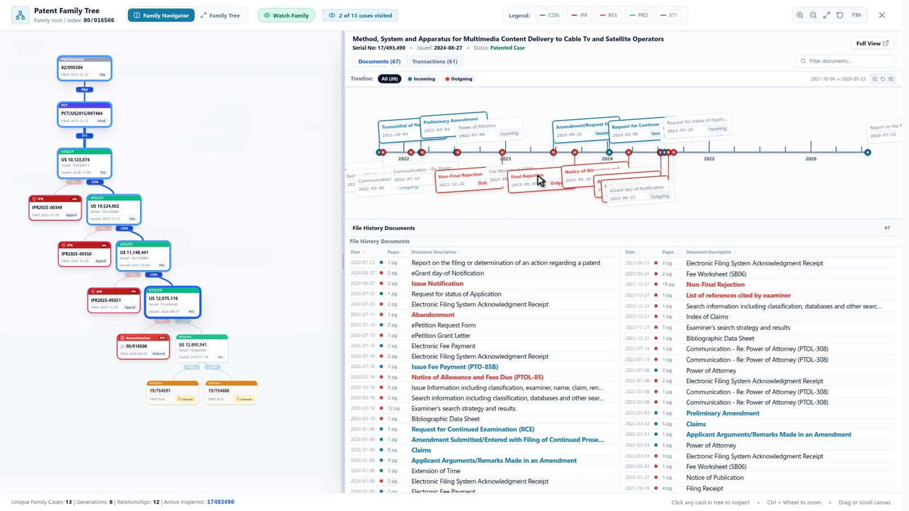
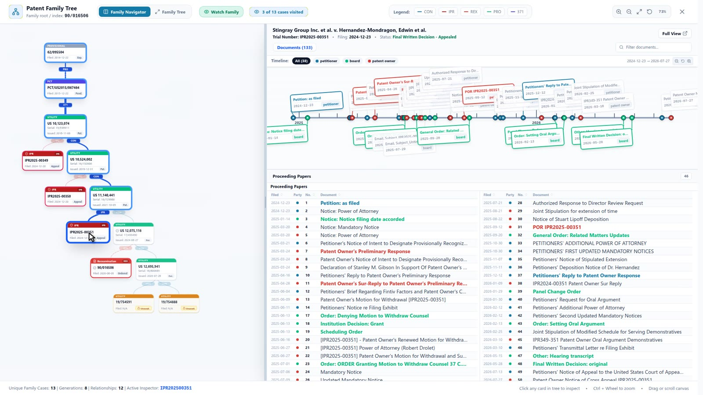
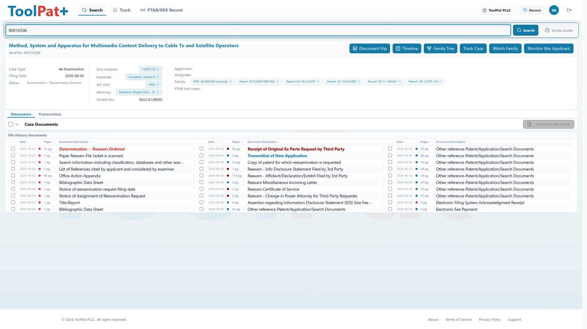
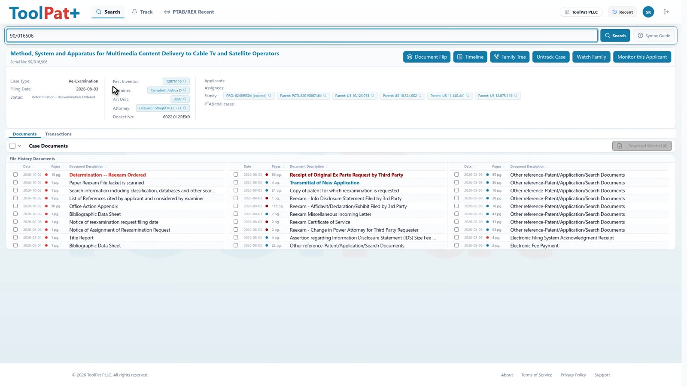
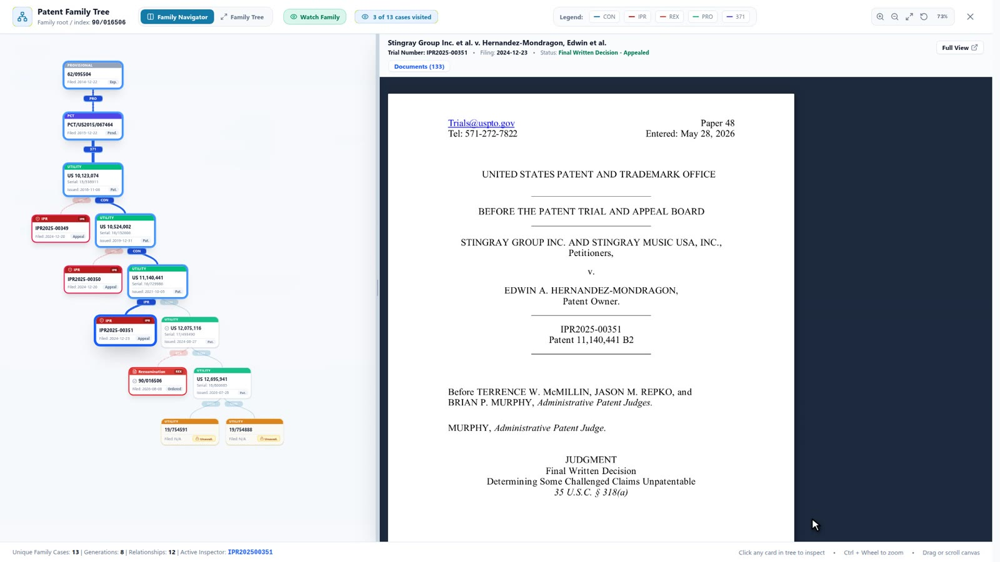
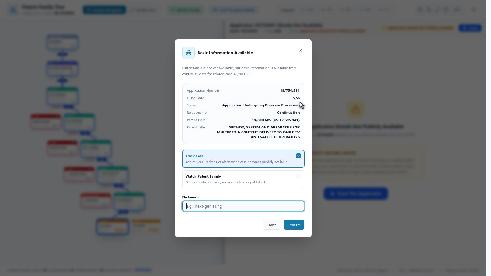
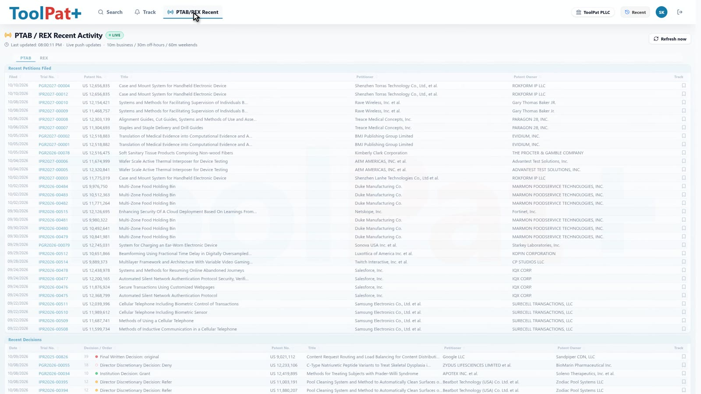
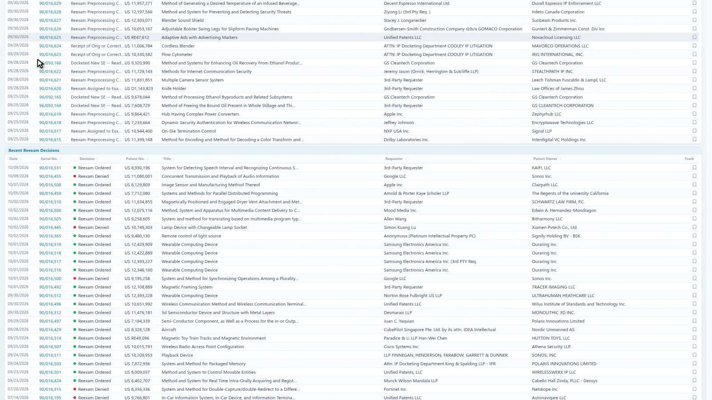

Patents & applications
11,140,441
Search patents, PTAB trials, reexams and litigation. Explore the whole family, read the record, and track every filing, all from one place.
Patent and application numbers, PTAB trial numbers, reexam control numbers, parties, or structured queries. ToolPat+ figures out what you mean and takes you straight to the case.

11,140,441

IPR2025-00351

90/016,506
Party or docket no.
The Family Navigator lays out parents, continuations, PTAB trials and reexams as one connected tree. Click any case and its record opens alongside.
 1
2
3
4
1
2
3
4
Every case has a visual timeline. Hover an event, pick the paper, and read it immediately, without a separate download or a trip to another site.


Track any case with one click and a nickname you'll recognize. Your tracker shows current status, the latest document and the latest transaction, and email alerts tell you when something changes.

Spot a continuation that isn't public yet? Track it anyway, and ToolPat+ alerts you when it becomes available. Or watch an entire family and hear about every new member.
Two live feeds, side by side: new PTAB petitions and decisions, and new ex parte reexam requests, orders and determinations. Spot what matters, then open the full record in one click.


New IPR and PGR petitions, plus new ex parte reexam requests.
Institution decisions, final written decisions, reexam orders and determinations.
The papers that matter, not the procedural noise.
Feeds refresh about every 10 minutes during business hours, 30 minutes off-hours and 60 minutes on weekends.
Create a free account and start searching in minutes. Free accounts include generous monthly access quotas.
Draft: silent screen recording. The narrated founder version will replace it.